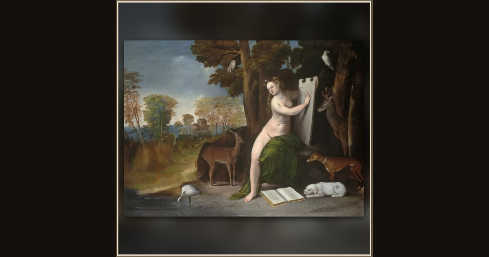

Circe and Her Lovers in a Landscape
Dosso Dossi · c. 1525 · National Gallery of Art · Washington, D.C., USA
The enchantress Circe, crowned with flowers, works her magic in a lush wood surrounded by the birds and beasts her spells once made of men. Explore its place in Book X of the Odyssey.